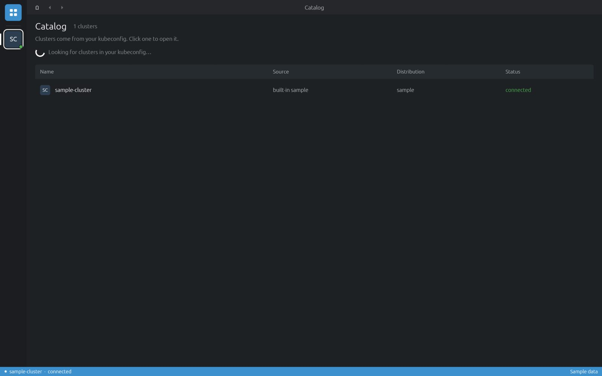

Install
Download the package for your system from the latest release, then follow the steps below.
| System | Package |
|---|---|
| Linux x86_64 | cluster-desk-linux-x86_64.AppImage |
| Windows x86_64 | cluster-desk-windows-x86_64.zip |
| macOS 11+ (Apple Silicon and Intel) | cluster-desk-macos-universal.dmg |
Linux
chmod +x cluster-desk-linux-x86_64.AppImage
./cluster-desk-linux-x86_64.AppImageThe AppImage is built on Ubuntu 22.04, so it runs on distributions with that glibc or newer.
Keep the file somewhere permanent (for example ~/Applications): updates replace this file in place.
Windows
- Unzip
cluster-desk-windows-x86_64.zipto a folder you keep, for example%LOCALAPPDATA%\Programs\Cluster Desk. - Run
cluster-desk.exe. If SmartScreen warns about an unknown publisher, choose More info → Run anyway.
macOS
- Open the dmg and drag Cluster Desk to Applications.
- The app is not signed with an Apple developer certificate, so macOS blocks the first launch. Allow it once:
Or open it, then choose System Settings → Privacy & Security → Open Anyway.xattr -dr com.apple.quarantine "/Applications/Cluster Desk.app"
First run
The app opens on the Catalog: every context in your kubeconfig
(KUBECONFIG, or ~/.kube/config), plus a built-in sample-cluster.
Click a cluster to open it.

kubectl
You don't need kubectl installed. Cluster Desk downloads the kubectl that matches each cluster's
version from dl.k8s.io, checks it against a pinned checksum, and keeps it in
~/.local/share/cluster-desk/binaries. With downloads turned off it uses the kubectl on your
PATH or the path you set. See Preferences → Kubernetes.
Started from a desktop launcher? Launchers often don't see the PATH your shell has,
so sign-in plugins like kubelogin, aws or gke-gcloud-auth-plugin may not be found.
Add their folders under Preferences → Authentication.
Updates
Release builds update themselves. This is on by default; turn it off under Preferences → Updates.
- Every 6 hours the app reads
latest.jsonfrom the newest GitHub release. - A newer package downloads in the background and is checked against the minisign public key built into the app. Anything else is refused.
- The update installs when you quit the app. To install it now, click the update notice in the status bar (it opens Preferences → Updates), then Restart to update.
What gets replaced: the AppImage file on Linux, cluster-desk.exe on Windows,
Cluster Desk.app on macOS. Copies built with plain cargo build don't update.